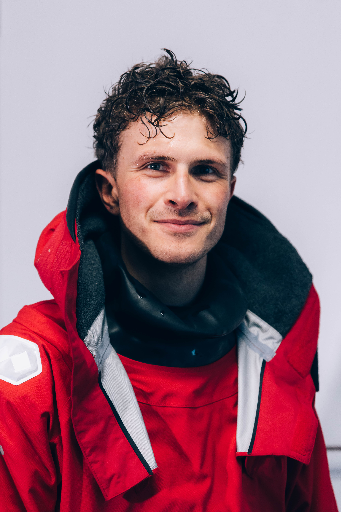
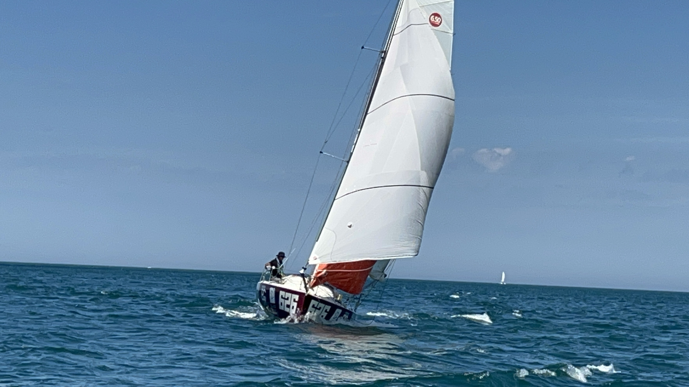

Salomé
Communication et logistique
Le skipper
Ingénieur à terre, marin au large. Le goût de la mer m'a conduit jusqu'au Mini 6.50 et à un objectif qui se prépare depuis plusieurs saisons : la Mini-Transat 2027.

Mon parcours
Né en région parisienne, je tombe amoureux de la mer à l'île de Ré, où j'apprends la voile en famille, sur dériveur puis en habitable. En grandissant, je découvre le large, le surf et le kitesurf.
À l'École navale, je me perfectionne en régate dans la rade de Brest. Mon frère Édouard me fait ensuite découvrir la classe Mini 6.50 : des bateaux de course au large accessibles, capables d'emmener leurs skippers vers des aventures hors du commun. Je suis conquis.
Je travaille aujourd'hui à Nantes comme ingénieur d'étude dans la décarbonation du fret maritime. À terre comme en mer, je suis animé par l'envie de comprendre, de progresser et de faire mieux avec les moyens disponibles.

Au large, chaque mille se gagne.
À terre aussi, c'est une équipe
Communication et logistique
Préparation et performance
Parrain du projet